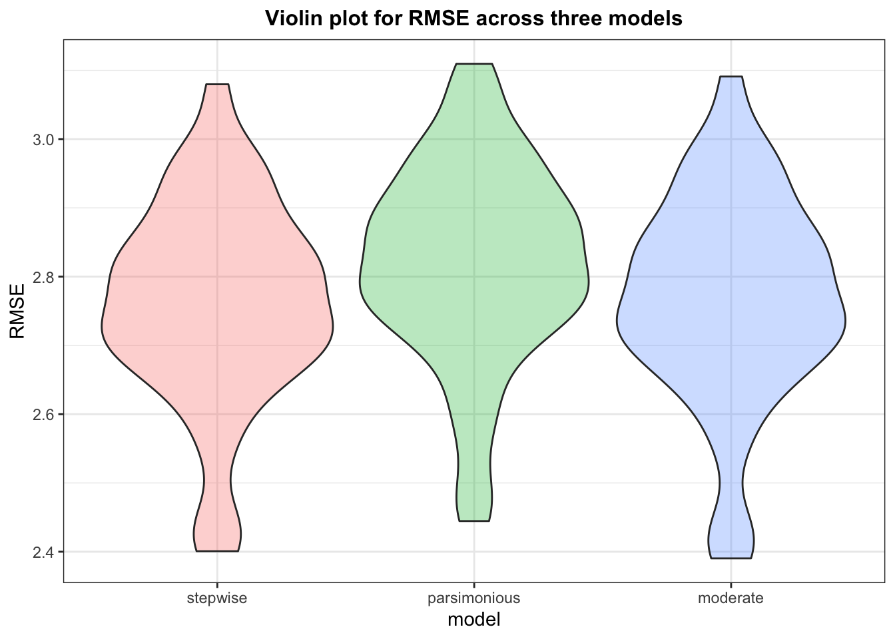

Here, we want to look at what variables are significant predictors for fare, with the final goal of building a taxi fare estimator that can take values on key variables and produce an estimated fare.
First, we do some exploratory analysis to provide an brief overview about the variable fare, and how it is distributed across boroughs, neighborhoods, type of taxis, and time of day.
#Total taxi fares by the hour
ggplotly(transport_final %>%
filter(pickup_date == "2019-02-14",
type != "for hire",
pu_boro != "Staten Island") %>%
group_by(pickup_hr, pu_boro, type) %>%
drop_na(pu_boro) %>%
summarize(total_fare = sum(fare_amount)) %>%
ungroup() %>%
ggplot(aes(x = pickup_hr, y = total_fare, color = type)) +
geom_path() +
facet_grid(pu_boro~.) +
scale_x_continuous(
breaks = seq(0, 23, by = 1)) +
labs(title = "Hourly total fares spent on drop-off locations in Manhattan",
x = "Pick-up hour",
y = "Total fare ($)") +
theme_bw() +
theme(
plot.title =
element_text(hjust = 0.5, size=12, face='bold'),
plot.subtitle =
element_text(hjust = 0.5),
legend.title =
element_blank()) +
viridis::scale_color_viridis(discrete = TRUE))You might also be interested in the neighborhoods in Manhattan with the highest average taxi fares (which means they are popular!) If so, you can check it out in the Shiny app!
#make the data that we will use from now on, filtering out "for hire" vehicles and Staten Island pick-up boro (since there's insignficant amount of pick=ups)
fare_data =
transport_final %>%
filter(type != "for hire",
pu_boro != "Staten Island") %>%
drop_na(pu_boro)We also break the hours down and recoded them into factors; e.g., 6am-9am is “morning rush”, 4pm-6pm is “evening rush”, 6pm-9pm is “dinner time”, etc.
#recode hours
fare_data =
fare_data %>%
mutate(time_of_day=
cut(pickup_hr,
breaks = c(0,2,5,9,11,13,16,18,21,23),
labels = c("night","early morning","morning rush","others","lunch","others","evening rush","dinner time","night")),
congestion = (fare_amount - trip_distance*2.5 -2.5)/.5)%>%
filter(congestion>=0) %>%
drop_na(fare_amount)We might want to look at the distribution of the outcome variable fare amount.
fare_data %>%
drop_na(fare_amount) %>%
ggplot(aes(x = fare_amount)) +
geom_density()Since the data looks heavily right skewed, we decided to drop fares that are above $60
fare_data =
fare_data %>% filter(fare_amount <= 60)It might be a good idea to look at the correlation plot between fare and other continuous variables.
fare_data %>%
select(fare_amount, trip_distance, duration, extra, tolls_amount) %>%
Filter(is.numeric,.) %>% #filter only numeric variables
cor() %>% #compute correlation matrix
corrplot(method = "circle", #represent correlation in "circle", size = magnitude
type = "upper",
diag=FALSE)Qualitatively, the variables that might be reasonably associated with fare amount include: trip duration, trip distance, time of day, tolls amount, taxi type, pick-up borough, and extra fees. So a regression model with the abovementioned as predictors can be our original expanded model.
Looking at the correlation plot, we saw that outcome variable fare is highly correlated with trip distance and tolls amount, well as duration, so we included these as predictors for our second model. Qualitatively, we might also add time of day to this model.
We also used stepwise regression with AIC as the criterion to potentially get a more parsimonious model.
Stepwise regression did not suggest leaving any variables out of the model (stick with the original expanded model). However, we wanted to see if a very parsimonious models (only with trip distance and duration as predictors) would perform better.
Next, we fitted the expanded model, as stepwise regression suggested.
Model diagnostics suggest that observation 123 and 16214 are highly influential points (based on crossing Cook’s distance cut-off value), so we removed it.
fare_data = fare_data[-c(123, 16214),]We refitted the model and below is the regression summary output for this first model (stepwise)
| term | estimate | std.error | statistic | p.value |
|---|---|---|---|---|
| (Intercept) | 3.8682173 | 0.3042885 | 12.712333 | 0.0000000 |
| trip_distance | 2.9119349 | 0.0105437 | 276.178770 | 0.0000000 |
| duration | 0.0026268 | 0.0002564 | 10.245506 | 0.0000000 |
| as.factor(time_of_day)early morning | -1.0209591 | 0.1565986 | -6.519593 | 0.0000000 |
| as.factor(time_of_day)morning rush | 0.8990284 | 0.0652982 | 13.768039 | 0.0000000 |
| as.factor(time_of_day)others | 1.6312348 | 0.0613797 | 26.576121 | 0.0000000 |
| as.factor(time_of_day)lunch | 1.6365450 | 0.0755214 | 21.669943 | 0.0000000 |
| as.factor(time_of_day)evening rush | 1.3085435 | 0.0704305 | 18.579205 | 0.0000000 |
| as.factor(time_of_day)dinner time | 0.4879576 | 0.0648260 | 7.527185 | 0.0000000 |
| extra | 0.0418769 | 0.0143375 | 2.920790 | 0.0034946 |
| tolls_amount | 0.3183774 | 0.0346650 | 9.184407 | 0.0000000 |
| as.factor(type)yellow | 0.1629665 | 0.0763161 | 2.135414 | 0.0327369 |
| as.factor(pu_boro)Brooklyn | 0.8849376 | 0.3345510 | 2.645150 | 0.0081706 |
| as.factor(pu_boro)Manhattan | -0.4005851 | 0.2996185 | -1.336984 | 0.1812401 |
| as.factor(pu_boro)Queens | -2.6404509 | 0.3276313 | -8.059215 | 0.0000000 |
| r.squared | adj.r.squared |
|---|---|
| 0.8806385 | 0.8805719 |
Fitting second and third model, and below are the regression outputs:
pars_lm = lm(fare_amount ~ trip_distance + duration, data = fare_data)
pars_lm %>%
broom::tidy() %>%
knitr::kable()
pars_lm %>%
broom::glance() %>%
.[,1:2] %>%
knitr::kable()moderate_lm = lm(fare_amount ~ trip_distance + duration + as.factor(time_of_day), data = fare_data)
moderate_lm %>%
broom::tidy() %>%
knitr::kable()| term | estimate | std.error | statistic | p.value |
|---|---|---|---|---|
| (Intercept) | 3.7238751 | 0.0532813 | 69.890791 | 0 |
| trip_distance | 2.8929704 | 0.0068463 | 422.557574 | 0 |
| duration | 0.0026143 | 0.0002574 | 10.157811 | 0 |
| as.factor(time_of_day)early morning | -1.0637538 | 0.1572106 | -6.766423 | 0 |
| as.factor(time_of_day)morning rush | 0.8854679 | 0.0649975 | 13.623108 | 0 |
| as.factor(time_of_day)others | 1.6077789 | 0.0613516 | 26.205989 | 0 |
| as.factor(time_of_day)lunch | 1.6093708 | 0.0754804 | 21.321715 | 0 |
| as.factor(time_of_day)evening rush | 1.3058245 | 0.0701641 | 18.611016 | 0 |
| as.factor(time_of_day)dinner time | 0.4812669 | 0.0649983 | 7.404304 | 0 |
moderate_lm %>%
broom::glance() %>%
.[,1:2] %>%
knitr::kable()| r.squared | adj.r.squared |
|---|---|
| 0.8795474 | 0.879509 |
Make this comparison in terms of the cross-validated prediction error
cv_df = #split into train/test 10 times, and stores using list column
crossv_mc(fare_data, 100) %>%
mutate( #transform list into tibbles
train = map(train, as_tibble),
test = map(test, as_tibble)) %>% #"map" model fitting to each train dataset for all 3 models
mutate(stepwise = map(train, ~lm(fare_amount ~ trip_distance + duration + as.factor(time_of_day) + extra + tolls_amount + as.factor(type) + as.factor(pu_boro) + as.factor(vendor_id), data = .x)),
parsimonious = map(train, ~lm(fare_amount ~ trip_distance + duration, data = .x)),
moderate = map(train, ~lm(fare_amount ~ trip_distance + duration + as.factor(time_of_day), data = .x))) %>%
#"map" rmse using model created by train data and and apply on test data to get rmse
mutate(rmse_stepwise = map2_dbl(stepwise, test, ~rmse(model = .x, data = .y)),
rmse_parsimonious = map2_dbl(parsimonious, test, ~rmse(model = .x, data = .y)),
rmse_moderate = map2_dbl(moderate, test, ~rmse(model = .x, data = .y)))
#plot rmse distribution by each model
cv_df %>%
select(starts_with("rmse")) %>% #select rmse column
pivot_longer( #transform to long tibble to easily specify group when plot
everything(),
names_to = "model",
values_to = "rmse",
names_prefix = "rmse_") %>%
mutate(model = fct_inorder(model)) %>%
ggplot(aes(x = model, y = rmse, fill = model)) + #specify elements going into the plots
geom_violin(alpha = 0.3) +
labs(title = "Violin plot for RMSE across three models", #annotate and modify plots
y = "RMSE") +
theme_bw() +
theme(legend.position = "none",
plot.title =
element_text(hjust = 0.5, size=12, face='bold'))
This plot above suggests although the moderate model performs only marginal better than the stepwise and parsimonious model, it seems to be the best choice given a balance of both parsimony and better predictive ability.
Model diagnostics
par(mfrow=c(2,2))
plot(moderate_lm)Check for multicollinearity
car::vif(moderate_lm)## GVIF Df GVIF^(1/(2*Df))
## trip_distance 1.019672 1 1.009788
## duration 1.017733 1 1.008828
## as.factor(time_of_day) 1.003564 6 1.000296Since VIF for all predictors are below 5, we don’t need to worry about multicollinearity.
The fare estimator used a subset of the original dataset with average fare amount computed for each combination of pick-up and drop-off neighborhood. However, there are instances where fare amount is only available for the pick-up and drop-offs neighborhoods there were a total of 228 trips meeting these criteria. The distances and duration of these trips were then imputed based on the fare amount, rate code, and the median speed of trips with valid distance and duration data.